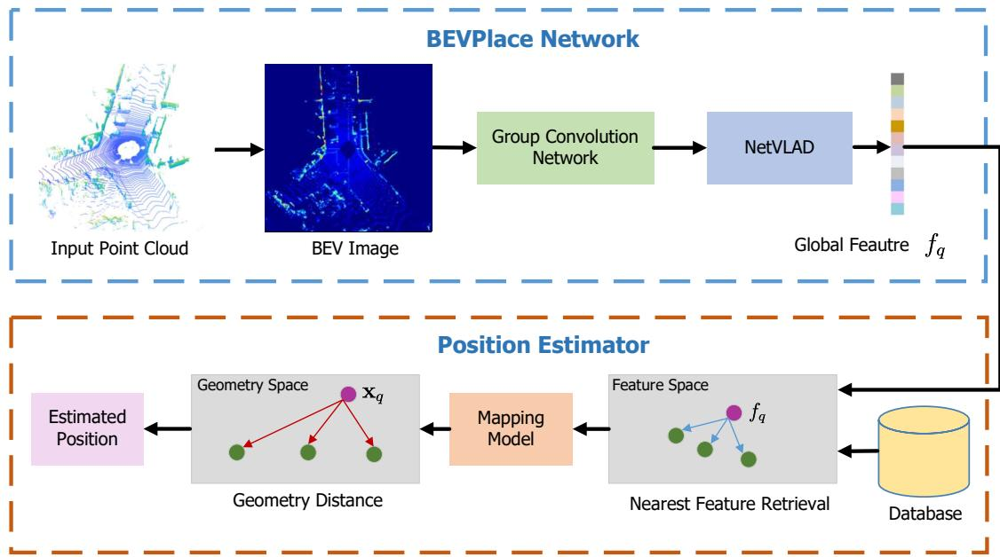
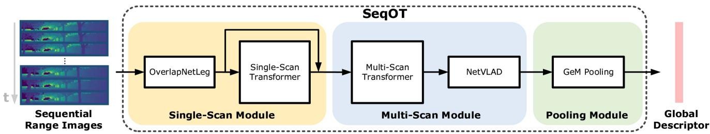

原图注（Fig. 1，正文描述）：As shown in Fig. 1, the translation of a point cloud causes little appearance changes in the BEV image but introduces geometry distortions to the range image. The results shown in Fig. 1 (c) validates that a simple NetVLAD based on the BEV representation achieves comparable performance with the state-of-the art methods. 怎么看这张图：并排展示同一平移下 BEV 几乎不变、range image 明显畸变，并给出「朴素 BEV+NetVLAD 已和 SOTA 相当」的结果。这正是上面自绘图想表达的「BEV 对平移天生鲁棒」的实证，也是 BEVPlace 比 OT 路线更适合横向变化场景的根。

原图注（Fig. 2，正文描述）：Our method is formed by two modules as illustrated in Fig. 2. In the BEVPlace network, we project the query point cloud into the BEV image. Then, we extract a rotation-invariant global feature through a group convolution network and NetVLAD. In the position estimator, we retrieve the closest feature of the global feature from a prebuilt database. We recover the geometry distance between the query and the matched point clouds based on a mapping model. The position of the query is estimated based on the recovered distances. 怎么看这张图：左边 BEVPlace 网络（投影→群卷积→NetVLAD→旋转不变全局特征），右边位置估计器（检索最近特征→按映射模型还原几何距离→三边定位出 x, y）。注意它产出的是「位置」而非「朝向」，再次印证只 2-DOF。
3. SeqOT：用序列扛长期、大视角
SeqOT 是 OverlapTransformer（OT）的序列版：单帧 OT 已经 yaw 不变且很快，但单帧信息有限，长期、大场景仍吃力。SeqOT 用连续 m=20 帧 range image 端到端融成一个序列级描述子。
原图注（Fig. 1）：Our proposed SeqOT exploits sequential range images from LiDAR sensors as input to extract spatial and temporal features at the same time and generate a final sequence enhanced global descriptor. 怎么看这张图：把连续多帧 range image 一起喂进去，同时提取空间（单帧结构）和时间（帧间变化）特征，最后吐一个「序列增强」的全局描述子。这对比 BEVPlace 的「单帧投影」——SeqOT 用时间维度补信息，专门为长期、大视角变化设计。

原图注（Fig. 2）：Pipeline overview of our proposed SeqOT. It first uses the single-scan module to extract features for each range image in the sequence. Then, the MSM fuses every three continuous features to exploit the spatial–temporal information and generates a subdescriptor. In the end, a GeM pooling module is applied to fuse the subdescriptors and generate a global descriptor for fast LiDAR sequence-based place recognition. 怎么看这张图：单帧模块（SST）→ 多帧模块（MSM，每 3 帧拼宽 → MST → NetVLAD 子描述子）→ GeM 时间聚合 → 全局描述子。这条「SST+MSM+GeM」链就是上面「数学证明 yaw 不变」的工程实现，也是它比单帧 OT 更抗长期变化的原因。
OT 用 range image，只对 yaw 不变、对横向平移会因投影畸变而失效；BEVPlace 用 BEV 图，对平移天生鲁棒、还能顺带给 2-DOF 位置。一个补「横向」，一个补「旋转」，投影方式不同导致各自的不变性范围不同——所以互补而非替代。BEVPlace 还多了「定位」这个 OT 没有的用法。